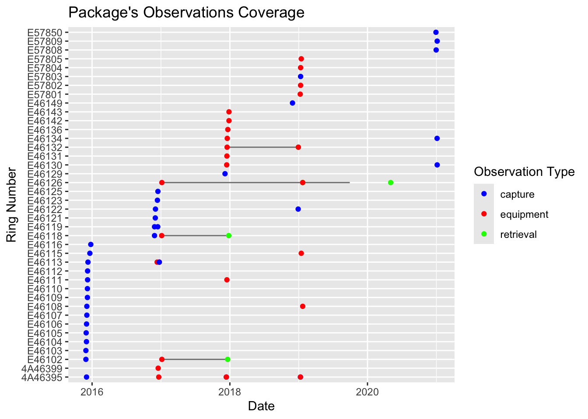

15 Create
In this guide, we explore how to generate a GeoLocator Data Package from a GeoPressureTemplate folder where you’ve already performed the analysis of the tracks following the GeoPressureTemplate workflow.
To be able to follow this guide, you need to have a GeoPressureTemplate project containing:
- An up-to-date
DESCRIPTIONfile, includingversion,contributors,licencesas described in the R packages book. - One interim
.RDatafile per tag, with all outputs you would like to publish, generated with the Geopressuretemplate workflow. - The
tag.csvandobservations.csvfiles in thedata/folder.
If you’ve not yet performed the GeoPressureR analysis, it is still possible to create a geolocator data package with only the core ressources.
15.1 Setup of the example
For this example, we won’t be using the Swainson’s Warbler nor Great Reed Warbler as we want a full project with multiple tags. Instead, we download the GeoPressureTemplate of the Woodland Kingfisher geolocator project. Our goal will essentially be to reproduce the associated GeoLocator Data Package uploaded on Zenodo already.
We can download this GeoPressureTemplate from Github in a temporary folder using the following code:
Code
repo <- "Rafnuss/WoodlandKingfisher"
# Create temporary file for the ZIP
temp_zip <- tempfile(fileext = ".zip")
# Download the ZIP file and unzip the repository
download.file(
glue::glue("https://github.com/{repo}/archive/refs/heads/main.zip"),
temp_zip,
mode = "wb"
)
temp_dir <- tempfile()
unzip(temp_zip, exdir = temp_dir)
# return the extraction directory
directory <- file.path(temp_dir, list.files(temp_dir))15.2 Initiate datapackage with metadata
We can generate a GeoLocator Data Package pkg from a GeoPressureTemplate folder with create_gldp_geopressuretemplate(). This function will read the DESCRIPTION file and create a frictionless package with the metadata. At this stage, no data is included in the package.
pkg <- create_gldp_geopressuretemplate(directory = directory)Read the datapackage specification to learn about all recommended metadata that can be added.
Generally, the information (title, description, license, etc…) between the code (DESCRIPTION file) would be different than the one for the datapackage published. Make sure to update these information accordingly!
# title
# pkg$title <- "GeoLocator Data Package: {Species} in {country}"
# Contributors/creators:
# Default is to take the GeoPressureTemplate authors, but it is common that
# additional co-authors should be added for the datapackage
pkg$contributors <- list( # required
list(
title = "Raphaël Nussbaumer",
roles = c("ContactPerson", "DataCurator", "ProjectLeader"),
email = "raphael.nussbaumer@vogelwarte.ch",
path = "https://orcid.org/0000-0002-8185-1020",
organization = "Swiss Ornithological Institute"
)
)
# There are no embargo by default (1970-01-01)
pkg$embargo <- "2030-01-01"
# Licences
# Code licenses are often not the same as data licences.
pkg$licenses = list(list(
name = "CC-BY-4.0",
title = "Creative Commons Attribution 4.0",
path = "https://creativecommons.org/licenses/by/4.0/"
))In addition, here are some more optional metadata:
# Review the description, often, you want to be more descriptive here.
# pkg$description
# Add keywords
pkg$keywords <- c("Woodland Kingfisher", "intra-african", "multi-sensor geolocator")
# Funding sources
pkg$grants <- c("Swiss Ornithological Intitute")
# Related Identifiers
# e.g. papers, project pages, derived datasets, etc.
pkg$relatedIdentifiers <- list(
list(
relationType = "IsPartOf",
relatedIdentifier = "10.5281/zenodo.11207081",
relatedIdentifierType = "DOI"
)
)You can display all these information at any point with
print(pkg)
##
## ── A GeoLocator Data Package (main)
## • title: "Migration route and timing of South African Woodland Kingfisher"
## • contributors:
## Raphaël Nussbaumer ('raphael.nussbaumer@vogelwarte.ch') (ContactPerson,
## DataCurator, ProjectLeader) - <https://orcid.org/0000-0002-8185-1020>
## • embargo: 2030-01-01
## • licenses:
## Creative Commons Attribution 4.0 (CC-BY-4.0) -
## <https://creativecommons.org/licenses/by/4.0/>
## • relatedIdentifiers:
## IsPartOf <10.5281/zenodo.11207081>
## • grants: "Swiss Ornithological Intitute"
## • keywords: "Woodland Kingfisher", "intra-african", and "multi-sensor
## geolocator"
## • created: 2025-08-06 06:28:19
## • bibliographicCitation: "Nussbaumer R, Rime Y (2025). \"Migration route and
## timing of South African Woodland Kingfisher.\""
## • spatial:
## • temporal: to
## • taxonomic:
## • numberTags:
##
## ── 0 resources.
## Use `unclass()` to print the Geolocator Data Package as a list.15.3 Add the geopressuretemplate data
add_gldp_geopressuretemplate() is a key function that read the geopressuretemplate data available and automatically add the most up-to-date available data to the datapackage.
pkg <- pkg %>% add_gldp_geopressuretemplate(directory = directory)If tags.csv and observations.csv are not available (i.e., not stored in the data/ folder of your project), tags and observations resources would have been generated by add_gldp_geopressuretemplate() based on the available information. You certainly need to edit them manually, adding some key missing information (e.g. ring_number).
write.csv(tags(pkg), file = "data/tags.csv", row.names = FALSE)
write.csv(observations(pkg), file = "data/observations.csv", row.names = FALSE)print(pkg)
##
## ── A GeoLocator Data Package (main)
## • title: "Migration route and timing of South African Woodland Kingfisher"
## • contributors:
## Raphaël Nussbaumer ('raphael.nussbaumer@vogelwarte.ch') (ContactPerson,
## DataCurator, ProjectLeader) - <https://orcid.org/0000-0002-8185-1020>
## • embargo: 2030-01-01
## • licenses:
## Creative Commons Attribution 4.0 (CC-BY-4.0) -
## <https://creativecommons.org/licenses/by/4.0/>
## • relatedIdentifiers:
## IsPartOf <10.5281/zenodo.11207081>
## • grants: "Swiss Ornithological Intitute"
## • keywords: "Woodland Kingfisher", "intra-african", and "multi-sensor
## geolocator"
## • created: 2025-08-06 06:28:19
## • bibliographicCitation: "Nussbaumer R, Rime Y (2025). \"Migration route and
## timing of South African Woodland Kingfisher.\""
## • spatial: Polygon and c(17.375, 32.875, 32.875, 17.375, 17.375, -24.375,
## -24.375, 12.875, 12.875, -24.375)
## • temporal: "2017-01-10" to "2019-09-28"
## • taxonomic: "Halcyon senegalensis"
## • numberTags:
## tags: 25
## measurements: 5
## light: 5
## pressure: 5
## activity: 5
## temperature_external: 5
## magnetic: 5
## paths: 5
## pressurepaths: 5
##
## ── 8 resources:
## • twilights
## • staps
## • paths
## • edges
## • pressurepaths
## • tags
## • observations
## • measurements
## Use `unclass()` to print the Geolocator Data Package as a list.You can now see a lot of new metadata (e.g., number of tags, coverages) as well as the resources (table)!
15.4 Check the validity of the data package
You can visualize the coverage of the package by ploting the Data Package. Check for the correct number of tags, as well as equipment and retrieval dates.
plot(pkg)
Finally, we check that the package is compliant with GeoLocator Data Package standards.
validate_gldp(pkg)
##
## ── Check GeoLocator DataPackage profile ──
##
## ✔ title is valid.
## ✔ contributors is valid.
## ✔ contributors[[1]] is valid.
## ✔ embargo is valid.
## ✔ licenses is valid.
## ✔ licenses[[1]] is valid.
## ✔ created is valid.
## ✔ numberTags is valid.
## ✔ numberTags$tags is valid.
## ✔ numberTags$measurements is valid.
## ✔ numberTags$light is valid.
## ✔ numberTags$pressure is valid.
## ✔ numberTags$activity is valid.
## ✔ numberTags$temperature_external is valid.
## ✔ numberTags$temperature_internal is valid.
## ✔ numberTags$magnetic is valid.
## ✔ numberTags$wet_count is valid.
## ✔ numberTags$conductivity is valid.
## ✔ numberTags$paths is valid.
## ✔ numberTags$pressurepaths is valid.
## ✔ bibliographicCitation is valid.
## ✔ $schema is valid.
## ✔ resources is valid.
## ✔ resources[[1]] is valid.
## ✔ resources[[2]] is valid.
## ✔ resources[[3]] is valid.
## ✔ resources[[4]] is valid.
## ✔ resources[[5]] is valid.
## ✔ resources[[6]] is valid.
## ✔ resources[[7]] is valid.
## ✔ resources[[8]] is valid.
## ✔ keywords is valid.
## ✔ keywords[[1]] is valid.
## ✔ keywords[[2]] is valid.
## ✔ keywords[[3]] is valid.
## ✔ grants is valid.
## ✔ grants[[1]] is valid.
## ✔ relatedIdentifiers is valid.
## ✔ relatedIdentifiers[[1]] is valid.
## ✔ taxonomic is valid.
## ✔ taxonomic[[1]] is valid.
## ✔ spatial is valid.
## ! spatial cannot be validated (external schema).
## ✔ temporal is valid.
## ✔ temporal$start is valid.
## ✔ temporal$end is valid.
## ✔ Package is consistent with the profile.
##
## ── Check GeoLocator DataPackage Resources
##
## ── Check GeoLocator DataPackage Resources twilights ──
##
## ✔ twilights$tag_id is valid.
## ✔ twilights$twilight is valid.
## ✔ twilights$rise is valid.
## ✔ twilights$label is valid.
## ✔ Table twilights is consistent with the schema.
##
## ── Check GeoLocator DataPackage Resources staps ──
##
## ✔ staps$tag_id is valid.
## ✔ staps$stap_id is valid.
## ✔ staps$start is valid.
## ✔ staps$end is valid.
## ✔ staps$known_lat is valid.
## ✔ staps$known_lon is valid.
## ✔ staps$include is valid.
## ✔ Table staps is consistent with the schema.
##
## ── Check GeoLocator DataPackage Resources paths ──
##
## ✔ paths$tag_id is valid.
## ✔ paths$stap_id is valid.
## ✔ paths$type is valid.
## ✔ paths$lat is valid.
## ✔ paths$lon is valid.
## ✔ paths$ind is valid.
## ✔ paths$j is valid.
## ✔ paths$interp is valid.
## ✔ paths$known is valid.
## ✔ Table paths is consistent with the schema.
##
## ── Check GeoLocator DataPackage Resources edges ──
##
## ✔ edges$tag_id is valid.
## ✔ edges$stap_s is valid.
## ✔ edges$stap_t is valid.
## ✔ edges$lat_s is valid.
## ✔ edges$lon_s is valid.
## ✔ edges$lat_t is valid.
## ✔ edges$lon_t is valid.
## ✔ edges$s is valid.
## ✔ edges$t is valid.
## ✔ edges$j is valid.
## ✔ edges$start is valid.
## ✔ edges$end is valid.
## ✔ edges$n is valid.
## ✔ edges$distance is valid.
## ✔ edges$bearing is valid.
## ✔ edges$gs_u is valid.
## ✔ edges$gs_v is valid.
## ✔ edges$ws_u is valid.
## ✔ edges$ws_v is valid.
## ✔ Table edges is consistent with the schema.
##
## ── Check GeoLocator DataPackage Resources pressurepaths ──
##
## ✔ pressurepaths$tag_id is valid.
## ✔ pressurepaths$datetime is valid.
## ✔ pressurepaths$stap_id is valid.
## ✔ pressurepaths$type is valid.
## ✔ pressurepaths$lat is valid.
## ✔ pressurepaths$lon is valid.
## ✔ pressurepaths$ind is valid.
## ✔ pressurepaths$j is valid.
## ✔ pressurepaths$pressure_tag is valid.
## ✔ pressurepaths$label is valid.
## ✔ pressurepaths$altitude is valid.
## ✔ pressurepaths$surface_pressure is valid.
## ✔ pressurepaths$surface_pressure_norm is valid.
## ✔ pressurepaths$sunset is valid.
## ✔ pressurepaths$sunrise is valid.
## ✔ Table pressurepaths is consistent with the schema.
##
## ── Check GeoLocator DataPackage Resources tags ──
##
## ✔ tags$tag_id is valid.
## ✔ tags$ring_number is valid.
## ✔ tags$scientific_name is valid.
## ✔ tags$manufacturer is valid.
## ✔ tags$model is valid.
## ✔ tags$firmware is valid.
## ✔ tags$weight is valid.
## ✔ tags$attachment_type is valid.
## ✔ tags$readout_method is valid.
## ✔ tags$tag_comments is valid.
## ✔ Table tags is consistent with the schema.
##
## ── Check GeoLocator DataPackage Resources observations ──
##
## ✔ observations$ring_number is valid.
## ✔ observations$tag_id is valid.
## ✔ observations$observation_type is valid.
## ✔ observations$datetime is valid.
## ✔ observations$latitude is valid.
## ✔ observations$longitude is valid.
## ✔ observations$location_name is valid.
## ✔ observations$device_status is valid.
## ✔ observations$observer is valid.
## ✔ observations$catching_method is valid.
## ✔ observations$age_class is valid.
## ✔ observations$sex is valid.
## ✔ observations$condition is valid.
## ✔ observations$mass is valid.
## ✔ observations$wing_length is valid.
## ✔ observations$additional_metric is valid.
## ✔ observations$observation_comments is valid.
## ✔ Table observations is consistent with the schema.
##
## ── Check GeoLocator DataPackage Resources measurements ──
##
## ✔ measurements$tag_id is valid.
## ✔ measurements$sensor is valid.
## ✔ measurements$datetime is valid.
## ✔ measurements$value is valid.
## ✔ measurements$label is valid.
## ✔ Table measurements is consistent with the schema.
## ✔ Package's resources are valid.
##
## ── Check GeoLocator DataPackage Coherence
## ✔ Package is internally coherent.
##
## ── Check Observations Coherence
## ✔ observations table is coherent.
##
## ── Overall Package Validation ──
##
## ✔ Package is valid.It is quite normal that you’ll first see some error here. Try to fix them and re-create the package until the package is valid. If you can’t fix them, contact me!
15.5 Upload to Zenodo
15.5.1 Option 1: Manually
First, create a new deposit on Zenodo and reserve the DOI to be able to define the package id.
The package id should be the concept DOI, that is, the one that doesn’t change with new versions. The DOI displayed on Zenodo is actually the DOI of the first version, but you can retrieve the concept DOI by substracting 1 to your ID number
pkg$id <- "https://doi.org/10.5281/zenodo.{ZENODO_ID - 1}"
# e.g. "10.5281/zenodo.14620590" for a DOI reserved as 10.5281/zenodo.14620591
# Update the bibliographic citation with this new DOI
pkg <- pkg %>% update_gldp_bibliographic_citation()Now, we can write the datapackage to file
write_package(pkg, directory = pkg$version)The content of the folder created can now be uploaded on your Zenodo deposit.
You can populate all other fields on Zenodo with the information provided in datapackage.json! Note that a datapackage contributors corresponds to creators on Zenodo and not the contributors.
15.5.2 Option 2: Programatically
A more efficient solution is to create a deposit on Zenodo using the API. For this, you first need to create a token and save it to your keyring with:
keyring::key_set_with_value("ZENODO_PAT", password = "{your_zenodo_token}")This allows us to create a ZenodoManager object which becomes useful later.
zenodo <- ZenodoManager$new(token = keyring::key_get(service = "ZENODO_PAT"))✔ Successfully connected to Zenodo with user tokenYou can create a zen4R::ZenodoRecord object from the from pkg.
z <- gldp_to_zenodo(pkg)✔ Successfully connected to Zenodo with user token✔ Successfully fetched resourcetype 'dataset'✔ Successfully fetched list of affiliations!Warning: ! Zenodo's creator can only have a single role.
→ Only the first role will be kept✔ Successfully fetched license 'cc-by-4.0'✔ Successfully fetched list of funders!print(z)<ZenodoRecord>
....|-- created: <NULL>
....|-- updated: <NULL>
....|-- revision_id: <NULL>
....|-- is_draft: <NULL>
....|-- is_published: <NULL>
....|-- status: <NULL>
....|-- versions: <NULL>
....|-- access:
........|-- record: public
........|-- files: restricted
........|-- embargo:
............|-- active: TRUE
............|-- until: 2030-01-01
............|-- reason:
....|-- files: <NULL>
....|-- id: <NULL>
....|-- links: <NULL>
....|-- metadata:
........|-- resource_type:
............|-- id: dataset
........|-- publisher: Zenodo
........|-- title: Migration route and timing of South African Woodland Kingfisher
........|-- creators:
........|-- rights:
........|-- related_identifiers:
........|-- subjects:
........|-- publication_date: 2025-08-06
....|-- parent: <NULL>
....|-- pids: <NULL>
....|-- stats: <NULL>Learn more about the zen4R package!
You can create the deposit on the website. For this we need to reserve the DOI, but without publishing the record yet: there is no data!
z <- zenodo$depositRecord(z, reserveDOI = TRUE, publish = FALSE)You can now open this record on your browser using its link: z$links$self_html
We can retrieve the concept DOI to build the pkg id
pkg$id <- paste0("https://doi.org/", z$getConceptDOI())We can now upload the data to the deposit with (or do it manually from the website)
write_package(pkg, directory = pkg$version)
for (f in list.files(pkg$version)) {
zenodo$uploadFile(file.path(pkg$version, f), z)
}At this stage, the Zenodo record is still not published. This is voluntarily not done automatically so that you check the record before publishing.
A nice feature of Zenodo is that you can share the record BEFORE publication with others (e.g., co-authors) allowing them to check everything before publication.
If any modification of the metadata are made on Zenodo, you overwrite pkg’s metadata with
z_updated <- zenodo$getDepositionByConceptDOI(z$getConceptDOI())
pkg <- zenodoRecord2gldp(z_updated, pkg)